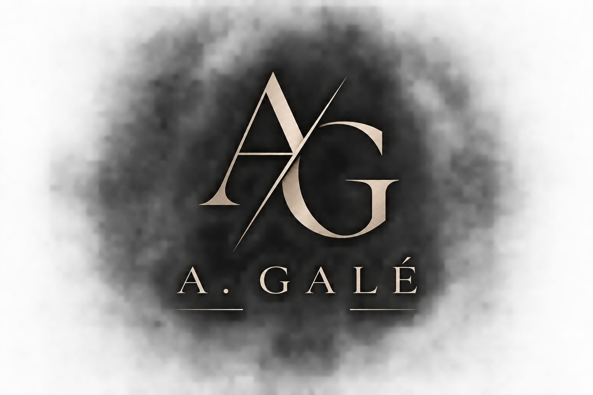
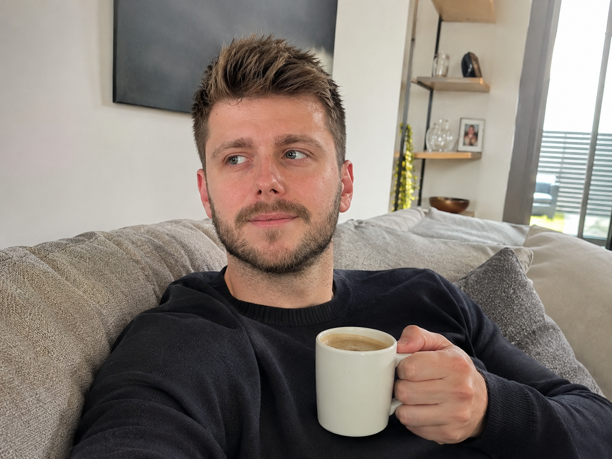
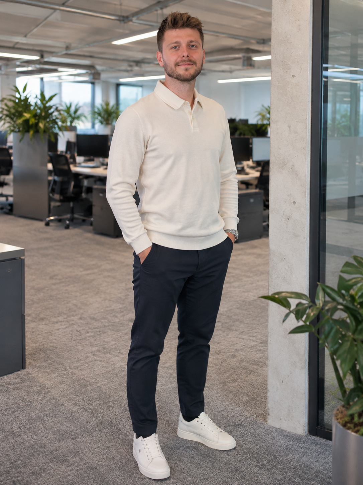

Einzelhandelskaufmann
Hier habe ich gelernt, Menschen zuzuhören, Bedürfnisse zu verstehen und passende Lösungen zu finden.

PERSÖNLICHE WEBSITE · SEIT 2026
PERSÖNLICH. TECHNISCH. MENSCHLICH.
MEHR ENTDECKEN01 / ÜBER MICH
Ich bin Anes Galijašević – geboren 1994 in Feldkirch, in Rankweil aufgewachsen und heute wieder in Feldkirch zu Hause.
Diese Seite ist mein persönlicher Ort im Netz. Hier verbinde ich das, was mich ausmacht: meine Familie, meinen Lebensweg, meine berufliche Entwicklung und mein Interesse an Technik und neuen Möglichkeiten.

02 / BERUFLICHER WEG
Mein beruflicher Weg führte mich vom Einzelhandel über das Elektrohandwerk in die technische Beratung.
Hier habe ich gelernt, Menschen zuzuhören, Bedürfnisse zu verstehen und passende Lösungen zu finden.
Die praktische Arbeit in der Elektrotechnik hat mein technisches Verständnis und meinen Blick für das Machbare geprägt.
Heute beschäftige ich mich mit Gebäudemesstechnik, Eigenverbrauchsoptimierung und E-Mobility. Mich motiviert, technische Zusammenhänge verständlich zu machen und durchdachte Lösungen in die Praxis zu bringen.

Die beruflichen Angaben beschreiben meinen persönlichen Werdegang und meine Tätigkeit.
03 / WAS MICH AUSMACHT
Abseits des Berufs bin ich Ehemann und stolzer Vater von zwei wundervollen Töchtern.
Familie gibt mir Rückhalt, Perspektive und jeden Tag neue Gründe, neugierig zu bleiben. Ich schätze die besonderen Momente genauso wie die kleinen Dinge, die den Alltag ausmachen.
04 / KONTAKT
Für Fragen, Austausch oder berufliche Anfragen erreichst du mich gerne direkt.
A. GALÉ
Schön, dass du hier bist.